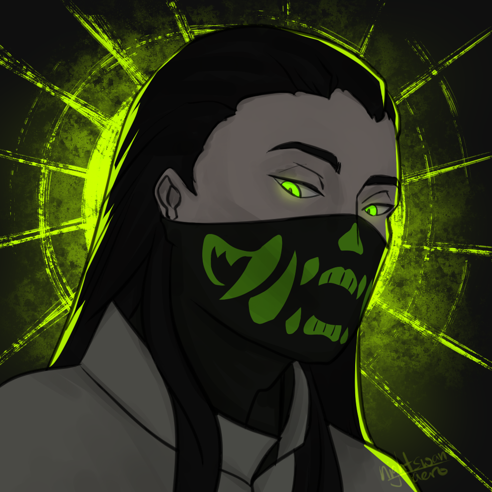
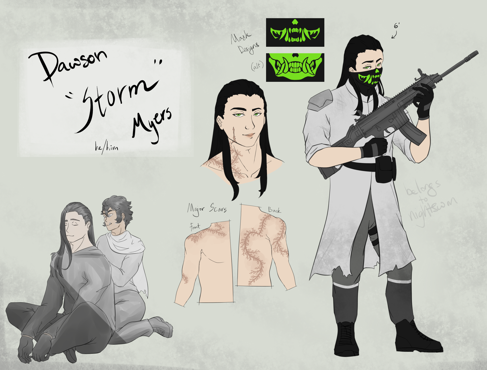
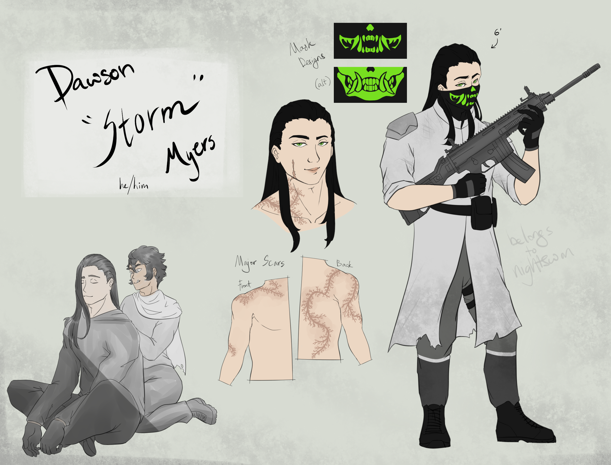
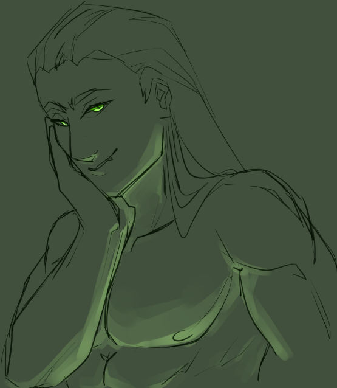
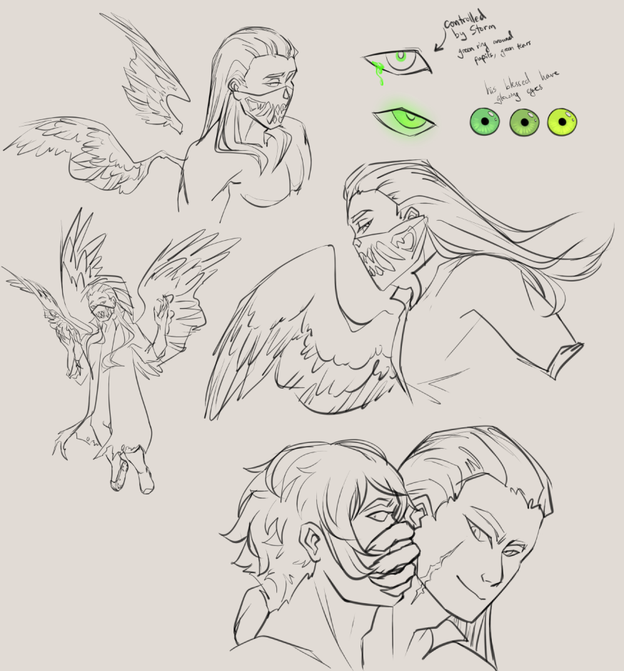
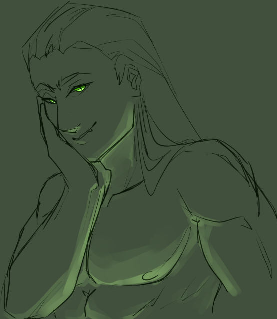
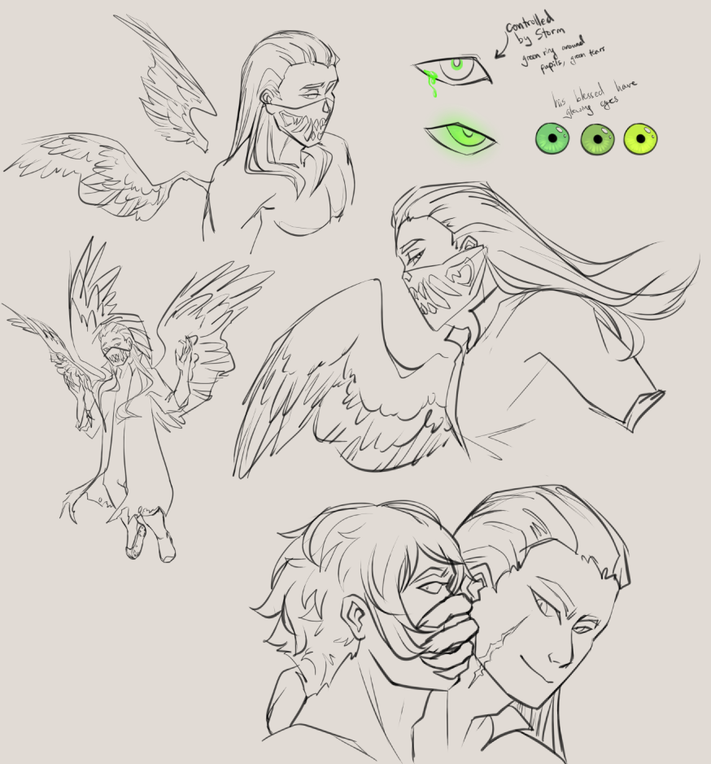

Personal Projects
Click icons to toggle work.
Paragons
Project Paragons is an ongoing comic collaboration with another artist, Rei. It features two characters and fantasy setting completely created by myself, and illustrated by my partner.


Storm
Dawson "Storm" Myers is a laidback professional killer and personal project. A character originating from late 2022, he is an ongoing character with detailed lore, concept art and used within various writing exercises and pieces.
 

 


